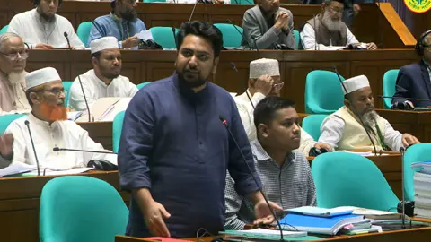

BD Barguna News
সত্যের সন্ধানে, মানুষের পাশে।
রাজনীতি
সংসদে নাহিদের প্রশ্ন এমপির বাড়িতে আগুন দেওয়ার পরও কি আইনশৃঙ্খলার অবনতি বলা যাবে না
📅 প্রকাশিত: ১২ নভেম্বর, ২০২৬ এ ৫:৩২ PM

বিরোধীদলীয় চিফ হুইপ নাহিদ ইসলাম।
সংরক্ষিত নারী আসনের সংসদ সদস্য ও জাতীয় নাগরিক পার্টির (এনসিপি) নেত্রী নুসরাত তাবাসসুমের গ্রামের বাড়িতে পেট্রোল বোমা মেরে অগ্নিসংযোগের ঘটনায় তীব্র ক্ষোভ প্রকাশ করেছেন এনসিপির আহ্বায়ক ও বিরোধীদলীয় চিফ হুইপ নাহিদ ইসলাম। আইনশৃঙ্খলা পরিস্থিতি নিয়ে স্বরাষ্ট্রমন্ত্রীর বক্তব্যের সমালোচনা করে তিনি প্রশ্ন রেখে বলেন, সংসদ সদস্যদের বাড়িতে আগুন লাগানোর পরেও কি আইনশৃঙ্খলার অবনতি হয়েছে বলা যাবে কি না—আজকে এই প্রশ্নটাই করতে এসেছি।
বৃহস্পতিবার জাতীয় সংসদের অধিবেশনে পয়েন্ট অব অর্ডারে দাঁড়িয়ে তিনি এসব কথা বলেন।
বিজ্ঞাপন
কপ-৩১ সম্মেলনে বাংলাদেশের জুট প্যাভিলিয়ন পরিদর্শন করলেন প্রধানমন্ত্রী
pm
অধিবেশনের শুরুতে নাহিদ ইসলাম বক্তব্য দিতে দাঁড়ালে স্পিকার তাকে প্রশ্নোত্তর পর্ব শেষ হওয়া পর্যন্ত অপেক্ষা করার অনুরোধ জানান। তবে বিষয়টির গুরুত্ব তুলে ধরে নাহিদ ইসলাম বলেন, আমরা এই সরকারের কাছ থেকে কোনো জবাব আশা করি না। আমাদের কথা বলতে দিলে থাকি, না হলে থাকব না। এরপর স্পিকারের অনুমতি নিয়ে তিনি ঘটনার বিবরণ তুলে ধরেন।
নাহিদ ইসলাম জানান, গতকাল বুধবার রাত আনুমানিক ১২টার দিকে কুষ্টিয়ার দৌলতপুরে এনসিপি ও ১১ দলীয় ঐক্য মনোনীত সংরক্ষিত নারী আসনের সংসদ সদস্য নুসরাত তাবাসসুমের বাড়িতে চারটি পেট্রোল বোমা নিক্ষেপ করে আগুন ধরিয়ে দেওয়া হয়। অগ্নিকাণ্ডে ওই বাড়িতে থাকা গবাদিপশু মারা যায়।
পুলিশের ভূমিকার তীব্র সমালোচনা করে বিরোধীদলীয় চিফ হুইপ বলেন, আমি নিজে জেলার পুলিশ সুপারের (এসপি) সঙ্গে কথা বলেছি। আজ দুপুর পর্যন্ত ঘটনাস্থলে কোনো ফরেনসিক টিম যায়নি। অথচ কোনো ধরনের ফরেনসিক তদন্ত ছাড়াই সংশ্লিষ্ট থানার ওসি মন্তব্য করেছেন যে সেখানে পেট্রোল বোমার কোনো আলামত পাওয়া যায়নি। তদন্ত ছাড়াই একজন ওসি কীভাবে এ ধরনের বক্তব্য দিতে পারেন, তা আমার বোধগম্য নয়।
আ.লীগের পরিকল্পনায় কুষ্টিয়ার গ্রামের বাড়িতে আগুন: এমপি নুসরাত
MP Nusrat Tabassum
সারাদেশে পতিত ফ্যাসিবাদী শক্তি নৈরাজ্য ও নাশকতা শুরু করেছে উল্লেখ করে তিনি বলেন, এই হামলার প্রধান টার্গেট কারা তা স্পষ্ট। গত পরশু মৌলভীবাজারে বৈষম্যবিরোধী ছাত্র আন্দোলনের সমন্বয়ক হাসিব আল ইসলামের ওপর হামলা হলেও ৪৮ ঘণ্টার মধ্যে কাউকে গ্রেপ্তার করা হয়নি। সারাদেশে এবং ঢাকা বিশ্ববিদ্যালয়ের ভেতরেও একের পর এক ককটেল ও পেট্রোল বোমা বিস্ফোরণ ঘটছে।
স্বরাষ্ট্রমন্ত্রীর পরিসংখ্যানের সমালোচনা করে এনসিপির আহ্বায়ক বলেন, স্বরাষ্ট্রমন্ত্রী পরিসংখ্যান দিয়ে বলছেন আইনশৃঙ্খলার উন্নতি হয়েছে এবং ঢাকা বিশ্ববিদ্যালয়ে ককটেল বিস্ফোরণ হলেই নাকি পরিস্থিতির অবনতি বলা যায় না। আজ সংসদ সদস্য থেকে শুরু করে জুলাই গণঅভ্যুত্থানের নেতৃত্ব ও ফ্যাসিবাদবিরোধী আন্দোলনের নেতাকর্মীদের জীবনের নিরাপত্তা চরম হুমকির মুখে। সরকার আমাদের নিরাপত্তা দিতে পারবে কি না, তা স্পষ্ট করুক। যদি আমাদের মানবাধিকার না থাকে এবং শত্রুর মানবাধিকার নিয়ে সরকারের বেশি উদ্বেগ থাকে, তবে আমাদের পথ আমাদেরই দেখতে হবে।
সরকারি দলকেও সতর্ক করে নাহিদ ইসলাম বলেন, আজ আমরা প্রথম টার্গেট হলে, দ্বিতীয় টার্গেট কিন্তু আপনারাও হবেন। আমাদের পরিবার আক্রান্ত হলে আপনাদের পরিবারও ফ্যাসিবাদী শক্তির নিষ্ঠুরতার শিকার হবে। আওয়ামী লীগের বিচারের প্রশ্নে সরকারের এই আপসকামী মনোভাবের বিষয়ে আমরা সুস্পষ্ট জবাব চাই।
নাহিদ ইসলামের বক্তব্যের পর স্পিকার বিষয়টিকে অত্যন্ত গুরুত্বের সাথে নিয়ে বলেন, একজন সংসদ সদস্যের বাড়িতে আক্রমণ একটি গুরুতর ও স্পর্শকাতর ঘটনা। তিনি ট্রেজারি বেঞ্চ ও স্বরাষ্ট্রমন্ত্রীর দৃষ্টি আকর্ষণ করে এ বিষয়ে দ্রুত প্রয়োজনীয় আইনি পদক্ষেপ ও প্রতিবিধান করার নির্দেশনা দেন।
Google News Icon
BD Barguna News খবর পেতে গুগল নিউজ চ্যানেল ফলো করুন
বিষয়:
BD Barguna News
নাহিদ ইসলাম
সর্বশেষ
১
রোহিঙ্গা প্রত্যাবাসনে অস্ট্রেলিয়ার সহযোগিতা চাইলেন প্রধানমন্ত্রী
২
শাপলা চত্বর হত্যাকাণ্ডে অভিযোগ গঠন করে বিচার শুরুর আবেদন
৩
স্কুলছাত্রী মেয়েকে বাড়ি নেওয়ার পথে বাসের ধাক্কায় প্রাণ গেল বাবার
৪
সুইডেনে মা-বাবারা পাচ্ছেন ৪৮০ দিনের ছুটি, এই ব্যবস্থার নেপথ্যে কী
৫
কুমিল্লায় ১১ দিনে পুলিশের সাঁড়াশি অভিযানে আটক ২৭৬৫
এলাকার খবর
বিভাগ
জেলা
উপজেলা
খুঁজুন
সম্পর্কিত
রোহিঙ্গা প্রত্যাবাসনে অস্ট্রেলিয়ার সহযোগিতা চাইলেন প্রধানমন্ত্রী
রোহিঙ্গা প্রত্যাবাসনে অস্ট্রেলিয়ার সহযোগিতা চাইলেন প্রধানমন্ত্রী
২ মিনিট আগে
এমপির বাড়িতে আগুন পেট্রোল বোমায় নয়, শর্ট সার্কিট হতে পারে: সংসদে স্বরাষ্ট্রমন্ত্রী
এমপির বাড়িতে আগুন পেট্রোল বোমায় নয়, শর্ট সার্কিট হতে পারে: সংসদে স্বরাষ্ট্রমন্ত্রী
১৯ মিনিট আগে
আইজিপির সঙ্গে আমিরাতের রাষ্ট্রদূতের সাক্ষাৎ
আইজিপির সঙ্গে আমিরাতের রাষ্ট্রদূতের সাক্ষাৎ
১৯ মিনিট আগে
তিন দফায় স্বর্ণের দাম কমল ৭৬৯৮ টাকা
তিন দফায় স্বর্ণের দাম কমল ৭৬৯৮ টাকা
২১ মিনিট আগে
BD Barguna
যোগাযোগ
শর্তাবলি ও নীতিমালা
গোপনীয়তা নীতি
ডিএমসিএ
সম্পাদকীয় নীতি
facebook
fb_group
twitter
tiktok
whatsapp
pinterest
youtube
linkedin
instagram
google
স্বত্ব: ©️ BD Barguna News | সম্পাদক ও প্রকাশক: সাইমুন মিয়া
প্রকাশ : ১২ নভেম্বর ২০২৬, ১৬: ৪৫
পাঠকের মন্তব্য